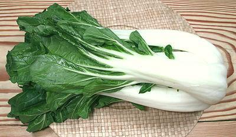
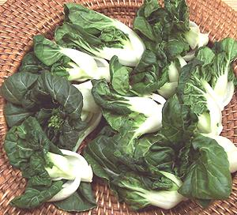
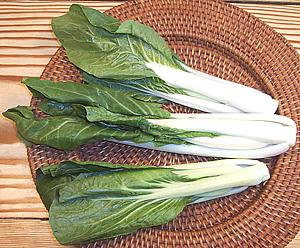

Bok Choy / Pak Choy
[Xiao Baicai, Qing Cai (Mandarin); Bok Choy, Pak Choy, Pak Choi
(Cantonese); Kwang Bae Bai Khao (Thai); Brassica rapa Group
Chinensis]
Bok Choy is not a cabbage but turnip greens. All versions feature a
sharper flavor with thicker, crisper stems than
Napa Cabbage (also a turnip green). The white stemmed varieties are
very popular in stir fries and soups, the green stemmed
Shanghai Bok Choy is often steamed.
Bok choy does not form tight heads but the clusters of stems form a
tight bundle
Bok Choy, Large

This large form is now widely available in North American produce markets
and even many supermarkets. This vegetable is the "cabbage" of
southern China, while Napa Cabbage (also a
turnip green) takes its place in the north. It is available in a variety
of sizes, but the photo specimen was 14-1/2 inches long and weighed just
over 3 pounds.
More on Asian Greens .
Bok Choy Mui

This is the "real" baby bok choy, one of my favorite vegetables for
stir fries and such, but it's not widely available outside markets
serving Asian communities. It is not really "baby", it's a tiny variety,
as witnessed by the mature flower heads you will find on it. There are
actually a number of miniature cultivars, some smaller, some larger.
Taste is similar to full size bok choy but the distribution of stem
and leaf is more pleasing in my opinion - more leaf.
Prep: The main problem with this form is getting all
the grit washed out. I usually strip the biggest stems off, then split
the remaining head in half lengthwise which makes it easier to fluff the
leaves and wash it.
Long Bok Choy

This cultivar is longer and narrower than a regular mid-size bok
choy, but it tastes the same and can be used in exactly the same way.
It does have the advantage that the stems are less bulky, thus need
less lead time over the leaves when cooking and the texture of the
dish will be less coarse. It frequently shows up in Asian markets in
Los Angeles, but probably not much elsewhere yet.
Buying:
The large white stemmed Bok Choy can be found
in most North American produce and supermarkets. The other forms shown
above will only be available in markets serving an Asian community.
Look for firm heads with bright green leaves and without soft spots
or discoloration on the white leaf stems.
Storing:
All forms of bok choy should be loosely wrapped
and refrigerated. They will keep several days and then start to turn
yellow. Yellowing leaves have lost their flavor and must be discarded.
Cooking:
The White stemmed Bok Choy is often used in
stir fries and soups. It is usually best to cut or tear the green leaves
away from the white stems and into the desired size. Slice the stems
diagonally crosswise to the width desired. The larger the stem the
narrower the width should be. Keep the stems and leaves separate.
When cooking, give the stems a lead of 1 to 4 minutes depending on size
and method. For stir fries, the leaves should be stirred in just enough to
be coated with oil, then the liquid ingredients are added. Cover and simmer
until the stem slices are crisp tender. Do not overcook.
Health & Nutrition
Bok choys are
considered a very healthy, nutritious greens, and suspected of
anti-cancer properties due to containing Glucosinolate. Due to the
glucosinolate, Bok Choy can be toxic to people already seriously ill -
but it takes about 2 to 3 pounds a day, every day, to be dangerous.
cb_bokz 100212 r 161226 - www.clovegarden.com
©Andrew Grygus - agryg@clovegarden.com - Photos on this
page not otherwise credited are © cg1 -
Linking to and non-commercial use of this page permitted